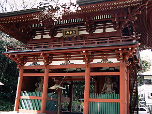
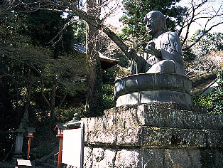
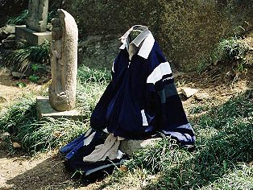

岩船山/栃木県岩船町
日本三大地蔵というものを御存じだろうか。
あまり聞き慣れないコトバだが地蔵信仰の霊場として青森の恐山、大阪府八尾市の常光寺、滋賀県木之本町の木之本地蔵、山形県の舟形町の猿羽根山地蔵などが挙げられる。
相変わらず「日本三大」と付くと３つにおさまらないのが世の常だ・・・
特に木之本地蔵などは大きさが6メートルもあるお地蔵さんだったりして、日本三大「地蔵」というよりも日本三「大地蔵」だったり、混乱に拍車がかかり放題かかっている地蔵界だが、その三大地蔵の一角に栃木県岩船町の岩船山も名を連ねている。
この岩船山、その昔から死者の集まる霊場とされていて、何でも8世紀頃あるお坊さんが生きているお地蔵さんを目撃したのが始まりという古い歴史を持つ古刹だ。
そこは木之本地蔵のような巨大なお地蔵さんでもいるのだろうか、はたまた恐山のような濃ゆ〜い世界が展開されているのだろうか、取り敢えず行ってみようと思うんですけど、いいですか。
・・・山あいから岩船山が見えてきた。
半分がごっそりと削り取られてしまったような岩肌剥き出しの異形の山である。
ここは岩船石といわれる石の山地で、中腹には採石場などもあり、ハードな景観を呈している。
名前の通り頂上付近は大きな船の形をしている、とも言えなくもなくもないかも。
その山頂近くに行くと突如大きな二階建ての仁王門が現れる。
そこが岩船山高勝寺である。
境内の案内図より
仁王門を潜ると石段が続く。その脇には鋳造製の仏像が。
 
説明によると当時佐野で名人と評判の鋳物師、丸山善太郎毎昭という人がつくったそうな。高さ2.35メートルなれど大仏とのことです。
で、石段を登ると本堂がある。
本堂左手前には一寸変わった形の鐘楼。その先には立派な三重の塔。
脇には血の池という恐ろしい名前の池まであって霊場気分も徐々に盛り上がってきたところで本堂の左奥に進むと・・・
おおおお！卒塔婆がっ！卒塔婆があ〜っ！
・・・なんという光景だろうか。
おびただしい数の卒塔婆が斜面に立て掛けられていて、山肌を覆い尽くしている。
普通、卒塔婆といえば墓石の後ろに立てられているものだがここでは卒塔婆が主役であるかのようだ。
卒塔婆の壁に埋もれるようにお地蔵さんの石像が並ぶ。
まさに死者の集まる場所といった雰囲気だ。
もともとこのお地蔵さん、全国の地蔵信仰がそうであるように亡くなった幼子の供養のためのものだ。
この岩船山は正徳３（1713）年頃にはじまった積極的な布教活動を通して広く下野一円に岩船地蔵信仰が広まったそうだ。
ちなみに先の大仏さんや三重の塔、仁王門など主要な堂宇はほとんどこの時代のモノだ。
本堂左の霊場を斜面に沿って登って行く。
するとさらに奥にも卒塔婆群が続いている。卒塔婆は皆新しい。つまりそれだけたくさんの人に信仰されているという事だろう。
そしてその卒塔婆の群れと同じ位強烈なインパクトがあったのがお地蔵さんに着せられた服である。
元々亡くなった子供の着物を着せていたものが現代の御時世を繁栄して洋服になったようである。
何故かジャケットやブラウスなど大人のものがほとんどだ。
新品の服がワンセット供えられているものと帽子とマフラーだけのものが得に印象的であった。

仁王門を挟んで本堂の逆側には水子供養エリアが。
こちらも人形や玩具などが供えられており、何とも悲し気な風情である。
信仰というモノは荘厳な空間を意図的につくりあげたりするが、一方でこのような壮絶な光景を意図しないところでつくりあげてしまうのだ。
予定調和なしの風景の迫力に圧倒されました。
日本三大地蔵の看板に偽り無し、の光景である。
200２.３.
珍寺大道場 HOME